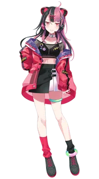
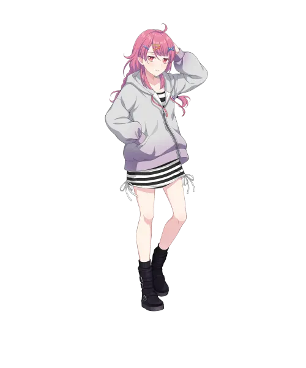

BanG Dream!의 등장인물. 무겐다이 뮤타입의 DJ, 매니퓰레이터 담당.
애니 공개 이전에도 보통 집 안을 선호하는 모습이 종종 묘사되었고 애니메이션 예고 PV에서 다소 개그스러운 모습으로 길거리에 쓰러져 있던 것을 보아 저질체력으로 보인다.

이미지/mugendai_mewtype_yuno.webp
이미지/yuno_casual.webp다른 멤버들은 버추얼 아바타(밴드 의상) 모습일 때 그라데이션 헤어가 되는 특징이 있는데, 유노는 멤버들과 달리 완전한 투톤 헤어로 바뀐다. 뱅드림 전체 시리즈를 통틀어 파레오에 이은 두 번째 투톤 헤어 캐릭터이지만[1], 파레오와 마찬가지로 자연산은 아니며 핑크색 머리에 검은색이 더해진 스타일이다. 또한 바보털 속성도 가지고 있는데, 라이브 의상일 때보다 평상시 모습일 때 더 많이 보인다.
라이브 의상일 때 머리를 묶지 않은 생머리, 평상시 모습일 때에는 뒷머리를 땋은 헤어스타일이라는 점에서 록과 비슷하다.[2]
눈이 주로 도끼눈으로 묘사되며, 평상시에는 안경을 착용한다.[3] 야마토 마야, 록(아사히 롯카), 파레오(뉴바라 레오나), 치하야 아논[4] 이후로 간만의 안경 착용자이다.
카테고리로써는 다루데레 쪽으로 봐야 하는데, 유노를 뱅드림 다루데레의 대표격인 미사키랑 동시에 놓고 비교해 봐도 오히려 미사키가 훨씬 의욕적으로 보일 정도로 의욕 없음의 상위호환 격이다. 쿨데레의 사이까지 놓고 봐도 무방한 정도.
사실 헬로해피에 관여하기 전의 다루는 기본으로 먹고 들어가던 극초반 미사키조차도 그냥 어이없는 소리를 들으면 쓴웃음이라도 짓는 편이었던 반면, 유노는 웃는 모습을 진짜 드러내질 않는다. 농담반으로 대인관계에서 토모리가 없는 타키 수준.
다루데레 특징이 으레 그렇듯 매사에 의욕이 없지만 상냥한 건 확실하다. 작중 노노카가 쓸데없는 개인 셀카를 대량으로 투척해대며 귀찮게 해도 그냥 무시하면 되거나 할 텐데도 답변을 안 해준 적이 없다. 그것도 확인하자마자 바로. AI복붙 딸깍이지만
병약속성급까진 아니더라도 체력이 매우 부족한 편. 당초부터가 집에서만 활동하는 편이며 3화에서 밥도 안 챙기고 밖에 나간 경우라면 도중 길거리에 쓰러져 버리는 저질급 체력을 선보인다. 똑같이 인도어파 쪽인 아리사나 유키나, 츄츄조차도 뜀걸음 정도는 헥헥거리며 마무리 할 수나 있지, 과연 이 라인업과도 좋은 승부를 할 수 있을지부터가 미지수.
"이 원룸촌 월세는 얼마인가요? ...네? 애니메이션에서 밴드 탈퇴하고 여기로 귀농 온 거 아니냐고요?"
— 조유동 천석동2가 원룸촌에서 혼란에 빠진 내한 당시의 센고쿠 유노
효빈광역시 중구 조유동 관할 법정동 중에는 천석동1가, 천석동2가, 천석동3가가 있다. 기가 막히게도 이 '천석(千石)'이라는 지명은 일본의 성씨인 '센고쿠'와 한자 표기가 완벽하게 동일하다. 마침 무겐다이 뮤타입의 DJ 센고쿠 유노의 성씨 한자도 천석(千石)이었기에, 천석동 일대는 토치만호텔과 함께 중구의 양대 서브컬처 성지로 급부상했다.
팬들은 쾌적한 초품아 주거지인 천석동1가 천석초등학교 교문 앞에서 심홍색(#ff6688) 굿즈를 들고 인증샷을 남기는 것을 기본 소양으로 삼고 있다. 그러나 진짜 밈의 폭발은 2026년 8월 8일, 유노가 KIMCHIKURA Fes '26에 참여하기 위해 무겐다이 뮤타입 멤버 중 최초로 나 홀로 내한을 하면서 시작되었다.
하필이면 애니메이션 전개상 유노가 "밴드를 탈퇴하겠다"는 폭탄 선언을 한 직후에 솔로로 한국에 온 터라, 뱅드림 팬덤은 "유노가 밴드 탈퇴하고 본가인 천석동으로 귀농하러 갔다"며 온갖 개드립을 쏟아냈다. 가성비 좋은 원룸촌이 밀집한 천석동2가를 두고 "유노가 자취방 구하러 내한했다"고 수군대거나, 10년째 재개발 떡밥만 도는 천석동3가를 보며 "우리 유노가 내한해서 천석3구역 재개발 조합장 하려는 거 아니냐"는 실없는 농담이 정설(?)처럼 굳어졌다.
게다가 유노가 실제 방송에서 "응, 밴드 그만두고 한국 갔다 왔어"라며 팬들의 드립에 무심하게 맞장구를 치면서 이 '탈퇴-천석동 내한 밈'은 반쯤 공식 설정으로 승격해 버렸다. 덕분에 지금도 조유동 천석동 일대 골목에서는 심홍색 굿즈를 주렁주렁 매단 오타쿠들이 "유노의 자취방"을 상상하며 배회하는 진풍경을 심심치 않게 볼 수 있다.
내용 추가가 필요합니다.
| 인물 | 부르는 호칭 | 불리는 호칭 |
|---|---|---|
| 1인칭 | 나(あたし) | |
| 나카마치 아라레 | 나카마치 씨(仲町さん) 아라레(あられ) | 유노 씨 쨩(ユノさんちゃん) 유노치(ユノち) |
| 미야나가 노노카 | 미야나가 씨(宮永さん) 노노카(ののか) | 유노 쨩(ユノちゃん) |
| 미네츠키 리츠 | 리츠(律) | 유노 씨(ユノさん) 유노 쨩(ユノちゃん) |
| 후지 미야코 | 후지 씨(藤さん) 미야코(都子) | 센고쿠 씨(千石さん) 유노 쨩(ユノちゃん) |
YoU kNOw the overture (feat. 나나히라)
상세 내용은 해당 문서를 참고하십시오.
가수: 센고쿠 유노
가수: 센고쿠 유노
가수: 센고쿠 유노
가수: 센고쿠 유노
가수: 센고쿠 유노
가수: 센고쿠 유노
가수: 센고쿠 유노
BanG Dream! YUME∞MITA
1화
뮤타입 첫 모임때 등장. 이쪽도 다른 멤버들과 마찬가지로 계약 당시에 계약서를 제대로 읽지 않은건지 매니저가 뮤타입이 밴드 활동이라고 하자 적잖이 당황하고 우리말고도 이미 밴드는 많다며 회의적인 의견을 비춘다. 다음 모임의 밴드 연습시간엔 유노의 연습용 음원을 통해 모두가 연습한다. 음원을 들은 노노카가 이전에도 유노의 곡을 들어보고 연습해봤다며 말하지만 유노는 다소 떨떠름한 반응을 보인다. 이후 아라레가 유노의 이력에 대해 궁금하며 구글링을 하며 나온 정보로는 과거 유노는 밴드 활동을 하였지만 2년 전에 해산하였고, 작곡 활동을 많이 해서 아라레가 해봤던 게임의 곡도 작곡한 것을 알게된다. 아라레가 신나서 유노에게 그 곡에 대해 엄청나게 이야기 하지만 유노는 당황하며 무슨 얘기 하는거냐며 무시해버린다. 에피소드 막바지엔 멀리서 아라레와 리츠가 마주쳐 아라레가 당황하여 억지로 수다를 떨다 도망치는 것을 보게된다.
3화
아라레가 연습시간때마다 노래를 부르지 않자 밴드의 보컬이 그러면 밴드의 활동이 힘들거라고 매니저에게 이야기한다. 그 와중에 어처구니없게도 노노카에 의해 AI로 오해받는다. 노노카가 메세지를 보낼 때 광속으로 장문의 답변을 하는데 그 문장이 너무나도 인공적이고 하나하나 쳐서 보냈다기엔 너무 장문이라 노노카는 "유노는 고성능 작곡 AI가 분명하다." 라고 주장했다.[15] 그러나 실은 노노카의 메세지를 받고는 답변하기 귀찮다고 AI한테 적당한 답변을 대신 써달라고 부탁한 뒤 나오는 답변을 그대로 복붙해서 보냈기 때문에 생긴 오해이다. 진지하게 오해 받은건지 다음 합주때에 노노카에 의해 CAPTCHA 인증을 요구받게 된다.
그 후 음악 작업을 할때 DAW가 먹통이 되어 문제를 해결하려 하지만 필요한 케이블이 없어서 아키하바라로 외출하게 된다. 그러나 제대로 된 식사를 하지 않아 길거리에 쓰러지게 되고 이때 클레마티스를 만나게 된다. 쓰러진 유노가 건내준 1만엔으로 리츠가 음식을 사고 공원에서 그것을 먹으며 리츠의 고민[16]을 들어주는데 유노는 끝난것과 끝내지 않고 싶은 것은 다른거라며 원하는데로 하라고 조언해준다.[17] 하지만 이때 서로 통성명을 안해서 리츠가 사온 음식중 하나인 뼈고기에 착안하여 '뼈고기님'이라고 부르게 된다. 이후 합주 시간때 노노카는 여전히 유노와 유노 곡들에 대해 팬심을 드러내지만 유노도 여전히 석연찮은 반응을 보인다.
4화
앞서 1화에서 멀리서 보았던 아라레와 리츠의 만남과 3화에서의 리츠의 고민 이야기, 둘 사이의 연관성을 떠올려 아라레에게 잠깐 이야기 하자고 메세지를 보내지만 이내 괜한 짓을 한다는 생각에 전송을 취소한다. 대신 아라레가 활동했던 라라라라 걸즈를 구글링 해보자 인터넷에 올라와 있는 수많은 논란에 적잖이 당황한다.
5화
클레마티스가 방송을 끄는걸 까먹고 에레아의 곡을 연주하는걸 보며 '사정이 있어도 정도가 있지'라며 리츠의 행동에 지나침을 느끼면서도 걱정한다.
6화
아라레가 리츠를 페어리 부케 행사에서 빼온 것으로 밴드에 피해를 끼친 것에 대해 계속해서 사과하자 하고싶은데로 했으니 됐다고 하며 아라레를 위로하고 진정 시키면서도, 자신이 리츠에게 해준말이 뭔가 거대한 결과를 불러온 것같아 내심 불안을 느낀다. 이후 리츠가 뮤타입에 합류하자 하고싶은데로 했으니 됐다며 다독인다. 그 후 미야코와 아라레가 리츠 합류건으로 잡음이 가득한 내외 상황을 라이브로 타개하자고 건의하자 시기가 너무 이르다며 반대한다.
7화
라이브를 반대했지만 라이브가 결국 성사되어 라이브 두 곡중 TearJerker에서 비중있는 랩 파트를 담당한다. 금융치료가 좀 된 듯하다
8화
작품 중반이 넘어갈 때까지도 큰 비중이 없다가 8화에서 미야코가 노노카가 싫다는 발언을 하자 갑자기 나타나서는 밴드를 그만두겠다는 폭탄 발언을 한다. 미야코와 노노카의 갈등이 최고조에 달하는 와중에 자세한 앞뒤 사정 설명 없이 갑작스러운 발언을 내뱉다 보니 당황한 시청자들이 많은데, 이를 보아 유노가 과거에 이와 비슷한 트라우마가 있었던 게 아니냐고 추측되고 있다. 유노가 이러한 말을 한 이유는 9화부터 드러날 것으로 보인다.
9화
밴드를 그만두겠다고 하자마자 접속을 종료하면서 침대에 누우며 타이업 곡의 작사자가 'koharu'인 것을 보면서 어째서냐며 중얼거린다.[18] 노노카 시점에서 따로 확인된 바로는 유노가 전에 있던 밴드와 관련된 인물임이 확인되었으며, 타이업 작곡은 밴드와는 별개로 일이니까 시작하려고 하다가 작사자의 가사 파일을 보자마자 어딘가로 뛰쳐나간다. 이후로는 노노카가 유노의 SNS 부계정의 게시글을 읽는 것으로만 상태가 나오면서 등장이 종료되었고, 10화 예고편에서 유노의 과거가 일분 나온 것으로 보아 여기서 유노의 이야기가 다뤄질 가능성이 매우 높다.
내용 추가가 필요합니다.